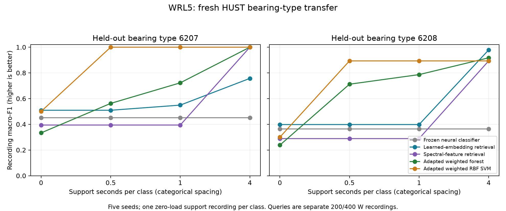

Calibration memory for machine diagnostics
A few verified recordings can make a diagnostic system much more useful on new equipment. Our experiments also found that ordinary classifiers can use those recordings as well as, or better than, retrieval. That changes what we think the database should provide.
An engineer commissioning a machine has a valuable resource: examples whose meaning is known. A recording came from a healthy run at a particular load. Another was taken with a confirmed fault. Those examples can help interpret the next recording—provided their context and provenance survive.
We call the proposed workflow calibration memory: keeping verified signal examples, their operating conditions and their confirmed labels available for reuse by models, engineers and agents. “Calibration” here means adapting a diagnostic model to equipment. It does not mean metrological sensor calibration or calibrated probability estimates.
The measured result: on two held-out bearing types, spectral nearest-neighbour retrieval reached 0.947 recording macro-F1 after receiving four seconds of labelled signal per class. A weighted random forest reached 0.959; a weighted RBF SVM reached 0.947 with only half a second per class. Our learned-retrieval superiority criterion failed.
This is enough for a research note and a product hypothesis. It is not a validated factory deployment or a new learning algorithm.
A small experiment with a strict boundary
We used the HUST bearing dataset from Hanoi University of Science and Technology, by Nguyen Duc Thuan and Hoang Si Hong. We selected 75 recordings covering five conditions shared by all bearing types: normal, inner-race fault, outer-race fault and two compound faults. The dataset paper describes artificially introduced defects measured on a laboratory rig.
We developed models on bearing types 6204 and 6205, selected them using 6206, and then fitted the final source models on those three types. Types 6207 and 6208 were held out from all model selection. For each target type, unloaded recordings supplied labelled support; separate recordings at 200 W and 400 W supplied the queries.
The derived representation combined vibration spectra, envelope spectra and amplitude statistics. We compared direct spectral retrieval, learned embeddings, random and shuffled-label retrieval controls, and ordinary classifiers adapted using the same available labels. Retrieval used exact distances and five uniform neighbour votes. The encoder stayed fixed as local examples were added.
The support budgets were 0, 0.5, 1 and 4 seconds per class. Every positive budget used the same one labelled acquisition per class. More seconds meant more adjacent half-second windows from that recording, not more independently labelled experiences. The query recordings never entered training or the reference gallery.
Local examples helped. Conventional adaptation helped too.
The table reports macro-F1 after averaging predictions within each query acquisition, then averaging the scores across five seeds and the two target bearing types. Macro-F1 weights the five diagnosis classes equally; it is not an accuracy percentage. There were only 20 target query acquisitions in total.
| Method | None | 0.5 s | 1 s | 4 s |
|---|---|---|---|---|
| Frozen neural classifier | 0.408 | 0.408 | 0.408 | 0.408 |
| Spectral-feature retrieval | 0.342 | 0.342 | 0.342 | 0.947 |
| Learned-embedding retrieval | 0.454 | 0.454 | 0.474 | 0.868 |
| Random references | 0.224 | 0.186 | 0.188 | 0.109 |
| Shuffled reference labels | 0.162 | 0.110 | 0.194 | 0.156 |
| Adapted logistic regression | 0.180 | 0.643 | 0.707 | 0.947 |
| Adapted random forest | 0.286 | 0.679 | 0.723 | 0.936 |
| Adapted weighted random forest | 0.286 | 0.637 | 0.755 | 0.959 |
| Adapted weighted RBF SVM | 0.400 | 0.947 | 0.947 | 0.947 |
The strongest retrieval result came from the spectral features. It did not require a neural encoder. Learned retrieval improved substantially over the frozen classifier, but remained below the conventional adaptation baselines at the largest support budget. We therefore retained the negative verdict from the rule fixed before scoring.
The neural representation was already weak on source validation: the selected contrastive candidate scored 0.449, versus 0.733 for logistic regression and the SVM. Every selected neural checkpoint came from the first epoch. We did not establish that a stronger learned representation had been achieved, and did not tune it after seeing target results.

At four seconds per class, about 91% of the learned retriever’s neighbours came from the newly supplied target recordings. This is principally evidence for local calibration across loads. It is much weaker evidence for transferring lessons from other machines.
There is also a lesson about what counts as memory. With only one or two new support windows per class, five-neighbour uniform voting can still be dominated by older source windows. Adding more correlated windows changes that vote. We did not retune the neighbour count or introduce one-vote-per-acquisition after seeing this pattern; those would require another predeclared experiment.
The earlier negative results matter
This was not our first attempt. In an earlier hydraulic study, naive historical retrieval failed across cooler-condition shifts. A subsequent learned-encoder experiment showed that relevant examples could improve a weak frozen classifier, but the memory gate restricted the benefit and ordinary random-forest adaptation still won. Both studies are retained in the evidence package.
The bearing experiment gives us a narrower, more useful interpretation: preserving labelled local examples is promising. A learned memory system is not automatically the best way to consume them. These studies used different datasets and splits, so their scores are not a progression on one common benchmark.
The idea has substantial prior art
We searched the technical literature before making a novelty claim. The main ingredients have a long history:
- Case-based reasoning. Aamodt and Plaza’s 1994 framework describes solving new problems using earlier cases and retaining useful experience. Calling an archive “memory” does not make that mechanism new.
- Industrial diagnostic case libraries. Cheetham, Varma and Goebel’s 2001 report on GE describes diagnostic applications in which historical fault logs were connected to repair histories, including locomotive diagnosis. The broader “signals or symptoms → past case → action” idea predates today’s agents.
- Local models built from historical observations. Cheng and Chiu’s 2004 work on nonlinear process modelling sits in the just-in-time learning tradition: relevant stored observations support a local model. Our comparison between retrieval and refitting belongs near that established line of work.
- Few-shot representations and fault diagnosis. Prototypical Networks (2017) learn spaces in which labelled support examples define class prototypes. Wang and colleagues’ bearing-diagnosis work, first posted in 2019, combines prototype learning with supervised domain adaptation using few labelled target samples. We did not reproduce either method; our learned candidate was a simpler supervised embedding.
- Versioned datasets and lineage. MLflow’s dataset tracking already records dataset identities, digests and source information. Provenance alone is not a new database category.
A recent 2026 preprint on multi-episode prototypes for sensor fault diagnosis provides a particularly relevant caution: its advantage from accumulating support episodes disappears against a prototype baseline given the same total support budget. That study uses synthetic faults injected into industrial measurements, not our bearing setup, but reinforces why information budgets must be matched.
The search notes record the sources, what was inspected and access limits. This is a focused technical search, not an exhaustive novelty determination. We use calibration memory as a description of a workflow. The experiments do not establish a new learning principle or uniqueness of the proposed database integration.
What this suggests for MorletDB
The useful database question is: can the same verified examples be reused reliably by different diagnostic methods? An engineer should be able to inspect the signal behind a match, reproduce a model’s calibration set and find out which labels were actually known when a decision was made.
MorletDB already stores waveform recordings and returns matching intervals with their original samples. The calibration workflow below is a proposal built on that foundation:
- Preserve the recording and its meaning. Keep sample rate, calibration metadata where known, asset and operating context beside the exact interval. A confirmed label should retain its author, evidence and availability time.
- Version the calibration set. Record which acquisitions were included, which were excluded, how features were derived and which source hashes were used. Changing a label should create a reviewable revision.
- Make acquisition boundaries visible. Ten adjacent windows from one run should not look like ten independent examples. Return episode counts and context differences alongside matches.
- Serve retrieval and ordinary ML. Export the same eligible examples to an SVM or another classifier. If adaptation wins, the archive should help that method too.
- Give agents bounded evidence. A read-only agent tool can retrieve and compare examples and report missing evidence. Confirming a label or changing an approved calibration set belongs in a separate authorized workflow.
These numbers were measured in a local Python experiment, not inside MorletDB. The shipped envelope-search representation differs from the spectral representation evaluated here. We have not benchmarked database serving, demonstrated reduced commissioning effort, or shipped the calibration-set API proposed in this article.
What would justify a stronger claim?
A useful next study needs new physical specimens and independent acquisitions, realistic label availability, and tests of unfamiliar operating conditions. For a customer pilot, the outcome should include engineering time per commissioned machine, diagnostic quality on separate runs, and how easily a disputed prediction can be reproduced.
This study used one laboratory rig, seeded faults, two target bearing-type groups and known examples of every target class. It did not test discovery of unknown faults, streaming safety decisions, repair outcomes, JEPA or xLSTM. Repeating random seeds cannot close those gaps.
The product hypothesis is nevertheless concrete: turn commissioning recordings into reusable diagnostic knowledge. The first step is to preserve the examples well enough that engineers, agents and conventional models can all use—and challenge—them.
Evidence and reproducibility
The original protocol was committed before target recordings were downloaded. Preparation then caught inconsistent file lengths, and we committed an explicit complete-window rule before any model fitting. The failed preparation log was preserved. Source-only model choices were committed before target scoring; no tuning followed those results.
All 75 downloaded files matched publisher SHA-256 checksums. An independent feature calculation reconstructed all 1,463 windows to numerical precision. Saved neural checkpoints replayed exactly, and all 360 target prediction sets were audited. Numerical-library warnings are documented in the report rather than hidden.
- Download the evidence package: frozen protocols, reports, source code, tests, full summaries, source manifests and audits for the local studies. The package includes portable instructions for reproducing the bearing experiment; raw recordings must be downloaded from their original publisher.
- Machine-readable bearing results and evidence-package SHA-256.
- Primary report inside the package:
waverag_local/BEARING_RESULTS.md. Earlier hydraulic work:waverag_local/EPISODIC_RESULTS.md. Original research snapshot:15f1c58. - Dataset attribution: Nguyen Duc Thuan and Hoang Si Hong, HUST bearing, Mendeley Data V3, DOI
10.17632/cbv7jyx4p9.3, CC BY 4.0. Our features are derived views; the original recordings were preserved.